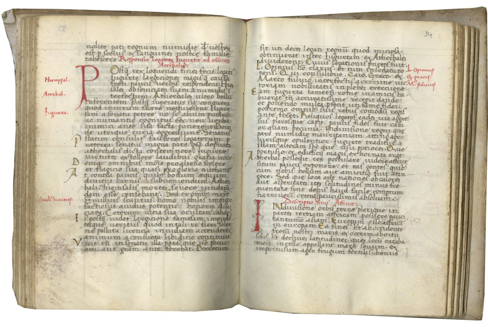
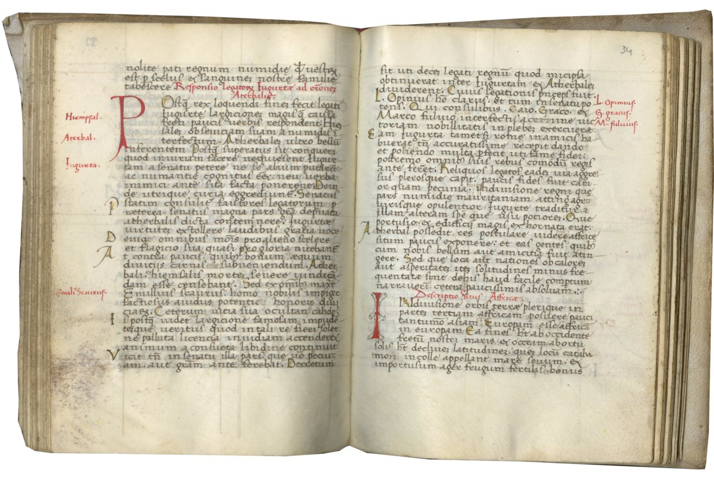

Chinoy
Nicolas de Gorran, Sermones de Tempore et de Quadragesima, ca. 1275-1300. This manuscript comprises a collection of sermons composed by one Nicholas of Gorran, an esteemed 13th-c. Dominican friar at the convent of Saint-Jacques in Paris. It includes the full collection of his sermons for the Temporale and for Lent, as well as some of his additional sermons for the Feast Days of Saints. Although his work seems to have circulated widely at the time, with many of these sermons known to appear in over 100 surviving manuscripts, no printed edition or translation has yet been made, and they remain obscure to modern scholars. While its leather binding is a simple 19th-20th c. reproduction, the manuscript within is exceptionally unusual. Its style dates it to the final decades of the 13th c., making it one of the earliest known examples of this text, dating to within its author’s lifetime, and it is typical of Parisian production at that time, localizing it to where he lived. It shows signs throughout of having been edited and rearranged during its production by another individual, quite possibly the author himself, and it is tempting to speculate that one of the hands which notates it could perhaps have been his own. The sermons within have not only been annotated, but rearranged—and one section partially eliminated—before the contents of the book were finalized. The text is well-decorated throughout with simple red and blue penwork, but bears only one true illuminated initial, at the opening of the first sermon, which features a meticulous little illustration of the author being blessed by Christ. Its quality craftsmanship overall suggests that this particular manuscript was intended for a recipient of some importance. Of paramount importance to modern readers, however, is one particular detail found on the lower tail of the illuminated capital. In recent years, the tendency of medieval manuscripts to feature humorous little animal drawings, snails and rabbits and such, has been a subject of popular fascination and no small number of clickbait articles. This manuscript, alone among those studied in our class, really does feature one: a charming little brown bunny![1]
 

[1] This is the text of footnote one.
[2] This is the text of footnote two.
[3] This is the text of footnote three.
Sources
Hansen, Valerie. The Silk Road: A New History with Documents (Oxford, 2016).
Kim Hodong, “The Unity of the Mongol Empire and Continental Exchanges over Eurasia,” Journal of Central Eurasian Studies 1 (2009), pp. 1–17.